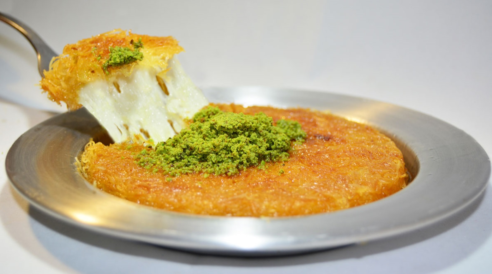

~ Kunefe Tatlisi Tarifi ~

Kunefe Nasil Yapilir? Icin Malzemeler
- 250 gram tel kadayıf
- 150 gr tuzsuz künefe peyniri
- 4 yemek kaşığı tereyağı
- 1 çay kaşığı pekmez
Serbeti Icin
- 2 su bardağı su
- 2 su bardağı toz şeker
- 1 çay kaşığı limon suyu
Üzeri için;
- Toz Antep fıstığı
- Süt kaymağı veya dondurma (isteğe bağlı)
Kunefe Nasil Yapilir
- Sıcak künefenin üzerine gezdireceğiniz soğumuş şerbeti hazırlamak için; toz şeker ve suyu tencereye alın. Ocağa aldığınız şerbet karışımını aralarda karıştırarak kısık ateşte kaynatın.
- Yaklaşık 20-25 dakika kadar kaynayan ve kıvam alan şerbete limon suyu ekleyip karıştırdıktan sonra ocaktan alın. Soğuması için bir kenarda bekletin.
- Tel kadayıfı geniş bir kaba alın. Elinizle tel tel açıp küçük parçalar haline getirin. Erittiğiniz tereyağını kattıktan sonra kadayıf tellerini açmaya devam ederek tereyağını kadayıflara yedirin.
- Pişirme işlemini gerçekleştireceğiniz küçük boy yuvarlak tepsileri ya da tavayı tereyağıyla yağlayın. Tereyağlı kadayıf karışımının yarısını pişirme tepsisinin tabanına bastırarak döşeyin.
- Suyunu süzdürdükten sonra rendelenmiş tuzsuz Antakya peynirini kadayıfların üzerine boşluk kalmayacak şekilde serpiştirin.
- Kalan tereyağlı kadayıf karışımıyla peynirlerin üzerini bastırarak kaplayın.
- Künefe tepsilerini ocağın üzerine alın. Tepsiyi ocak üzerinde gezdirerek künefeyi kısık ateşte pişirin. Taban kısmı renk alan künefeyi, geniş bir tabak yardımıyla ters çevirerek tekrar ocağa alın. Aynı şekilde pişirerek diğer tarafının da kızarmasını sağlayın.
- Ocaktan almak üzere olduğunuz nar gibi kızaran künefenin üzerine ılık şerbeti gezdirdikten sonra ocaktan alın.
- Kısa bir süre dinlenen ve şerbetini çeken künefeyi, dilimledikten sonra arzuya göre sıcak ya da ılık olarak sevdiklerinizle paylaşın.